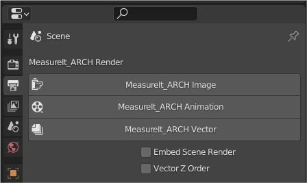

Rendering

MeasureIt_ARCH Render Settings can be found in the Render Panel of the Properties Editor. Currently this renders all MeasureIt_ARCH items to an image file which can be layered over Blender's render in the compositor.
MeasureIt_ARCH Image
- Renders a Still Image.
- WARNING: If 'Save Render to Output' is not enabled the rendered image will only be stored in an image data-block within Blender.
MeasureIt_ARCH Animation
- Renders the full frame range of the current scene.
- Animation Renders can be Cancelled with the Esc key, or by Right Clicking in the 3D View.
- A 3D Viewport window must be open for MeasureIt_ARCH to render animations.
- Animation frames will be saved to the Output path defined in the Render Panel.
MeasureIt_ARCH Vector
- Renders an SVG drawing of the current view.
- Embed Scene Render: embeds a raster rendering of the scene as the background of the SVG
- Vector Z Order: Orders the drawing of vector elements by the object origin's Z height. Useful for plan drawings.